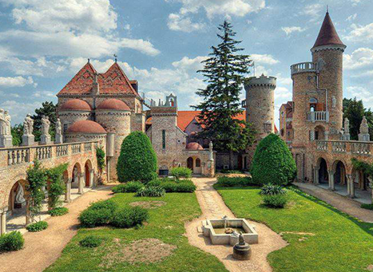
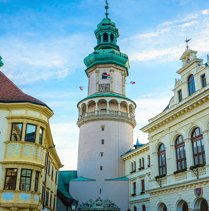

These cities are definitely worth the cultural experience
by: Lukas Nagy, Oct 22 2021
Székesfehérvár
This city is very close to Budapest and was called ‘the City of the
Kings’. Not only did it play the main role in coronation of the
royals of Hungarian Empire, but it has a looong past too - it was
inhabited in the 10th century B.C.! Currently, it has around 95 000
inhabitants.
You’d definitely love to visit this place! It has many many
historical buildings but not only that... It has many events, as it
is rich in atractions! That is mainly thanks to 40 schools in
Székesfehérvár.
Hetedhét Toy Museum- various toys from across the
ages. Even from the ancient monarchs themselves!
Black Eagle’s Chemist Shop-a museum displaying how
drugs ( medicine of course) were made from herbs and what tools
the pharmacists had been using
Árpád Bath-this is one of the most beloved
destination of its kind. Just chill and relax in the hot pools in
this resort and enjoy the life. It is sooo worth it :)

Photo: Dorina Haász

Photo: Leonhard Niederwimmer
Sopron
This city’s status is truly exceptional - ‘The Most Loyal Town’ (
Civitas Fidelissima). When Trianon happened and Hungary lost its
parts, Sopron’s 68% majority voted for staying Hungarian. The city
is located close to the Neusiedl lake, next to the Austrian borders.
Thanks to this fact, the inhabitants are usually bilingual.
What’s truly exceptional is the architecture and its long past - I
mean rich history. It is totally common that you’ll see Renessaince,
Baroque and medieval structures!
What’s more?
The foundations from the Roman Empire! All these elements display
ages and ages of stability and prosperity.
Debrecen
Debrecen was actually the former capital city of Hungary! And also
it is the second largest city in Hungary. Thic city was also know as
the ‘Calvinist Rome’ or ‘the Capital of the Great Hungarian Plain’
and has a Golden church which is its biggest pride. Both sadly and
luckily, you won’t find many English speakers there.
That allows you to feel the kindness and warmth of the Debrecen’s
people. :)
That is the biggest pride, however, you will find there dozens of
other atractions there such as:
Hetedhét Toy Museum- works as a restaurant, bar, and
exhibition venue
Black Eagle’s Chemist Shop - a heartful memorial for
those who attempted to free Hungary in 1956 from Soviet
dictatorship.
Árpád Bath- most well-known non-musical festival in
HU. In August for one week, the city is floating in colours and
flowers. Apert that, you’ll experience traditional dances, music,
and various types of artristry.